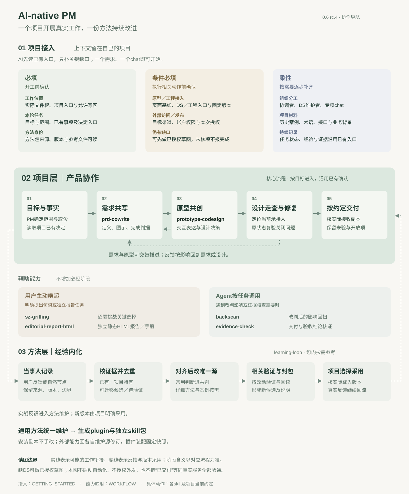

AI 经典论文
从问题、机制到能力边界，理解 AI 技术如何演进。
从问题、机制到能力边界，理解 AI 技术如何演进。
拆解 Agent 提示词里的任务、工具和边界设计。
看 Codex 和 Pi Agent 怎样运行任务。

项目接入先确认工作位置、任务和方法身份；工程接入、外部访问与发布按条件确认，其他材料逐步补齐。产品协作包含目标与事实、需求共写、原型共创、设计走查与修复、按约定交付；需求与原型可交替推进，反馈回到受影响的需求或设计。访谈与独立报告由用户主动提出，影响回扫与证据检查按任务需要调用，不增加必经阶段。实战反馈经记录、核证去重、对齐修改和验证封包，形成候选版本，由项目明确采用。图中流程不授权外发，交付不等于真实服务已验通。